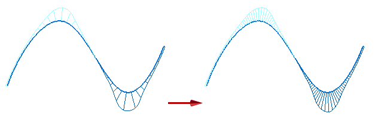
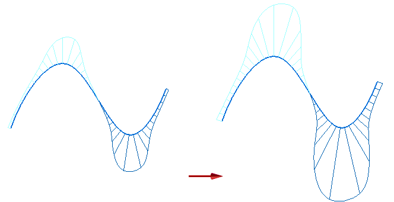

Curvature Comb Settings dialog box
- Command bar Options
- Show Curvature Combs
-
Toggles the display of curvature combs. Select this option to display the curvature comb and clear the option to hide the display of the curvature comb.
- Clear All Combs
-
Clears the display and comb definition of the currently displayed curvature combs. Once you clear the comb definition, you cannot toggle the display of previously displayed curvature combs.
- Density
-
Adjusts the density of the normal curves in the curvature comb display. You can use the slider to adjust the density.

- Maximum
-
Specifies the maximum density limit.
- Magnitude
-
Adjusts the scale of the curvature comb display. You can use the slider to adjust the magnitude.

- Maximum
-
Specifies the maximum magnitude limit.